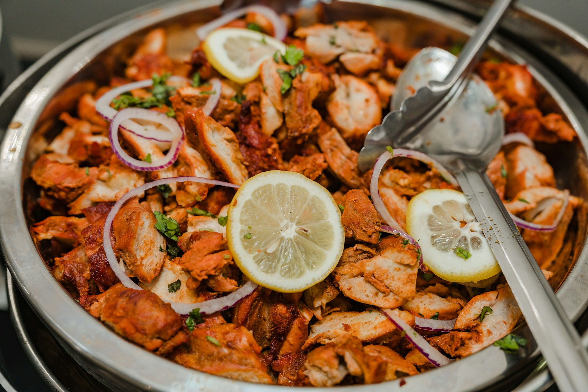
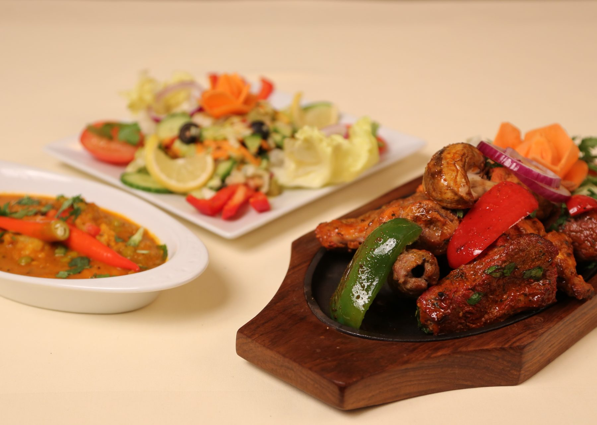
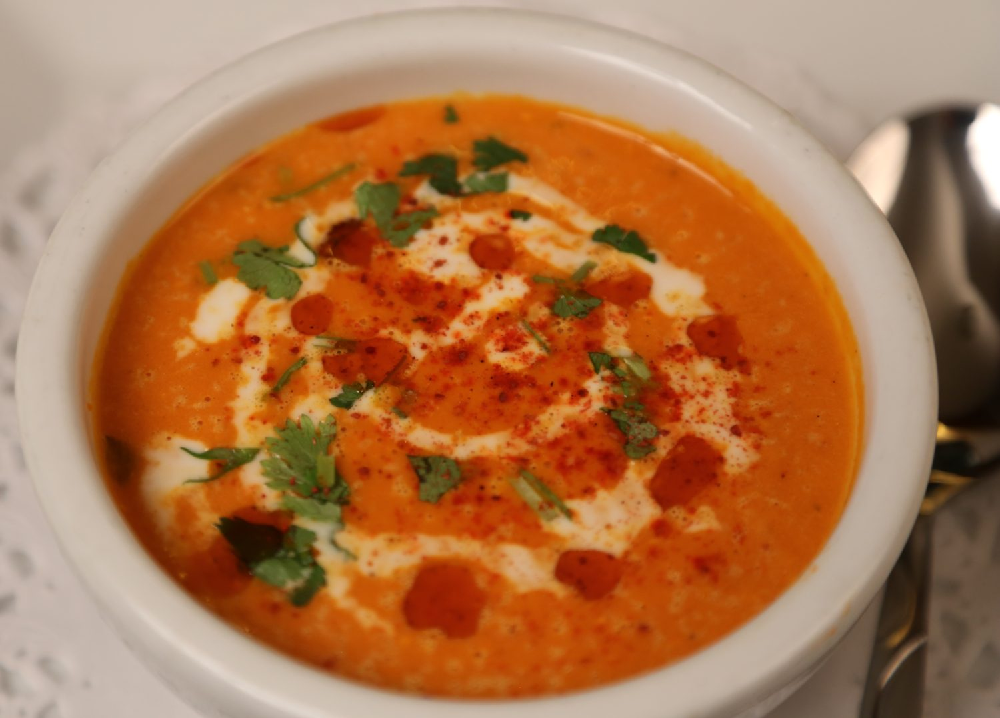
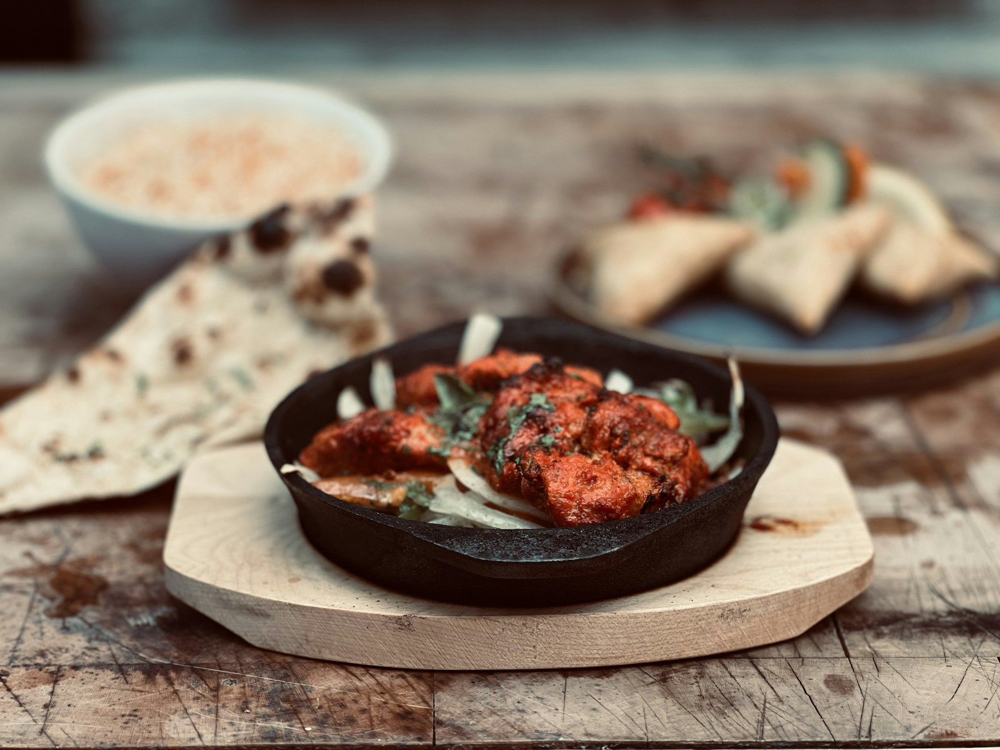
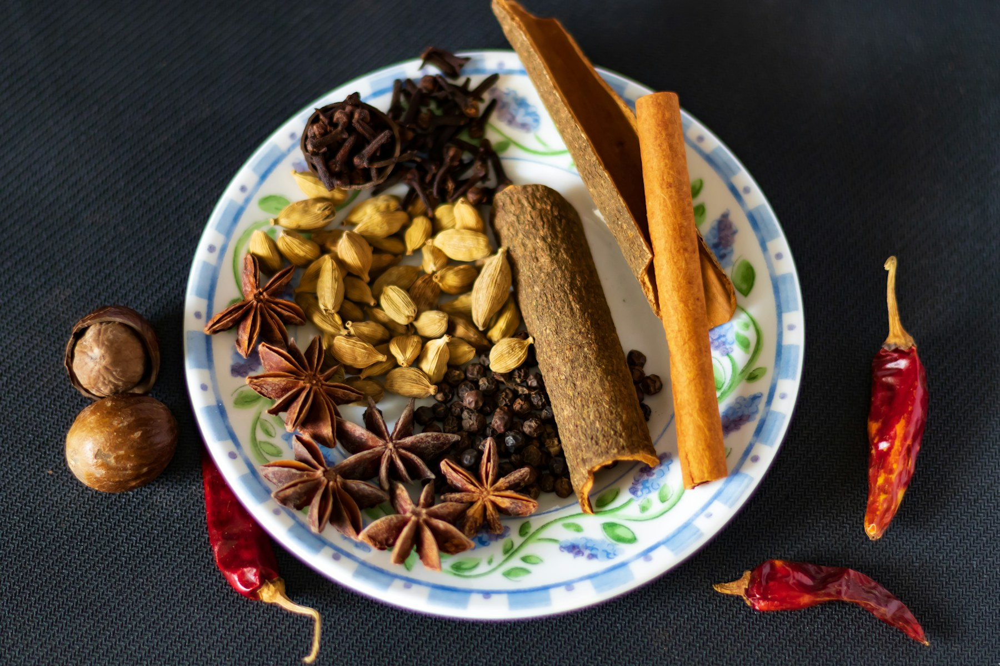
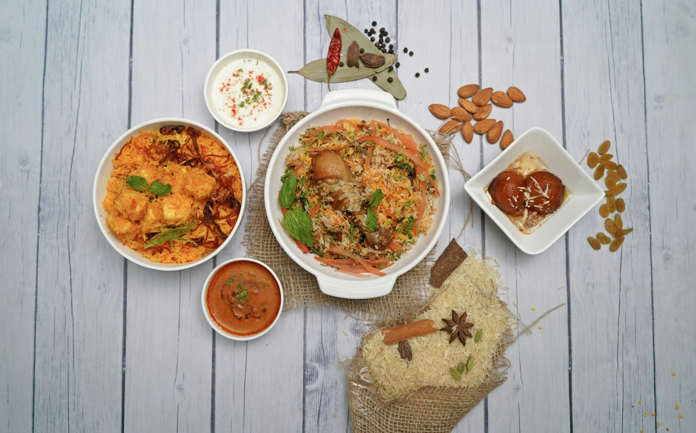

De tandoori-keuken
In een kleioven die we nog ouderwets op houtskool stoken, bereiden we de lekkerste grillgerechten. Een marinade van verse kruiden geeft vlees en vis vooraf hun aroma.
Naar de tandoori-gerechtenOude Oeverstraat 7, Arnhem
Al 35 jaar een begrip in Arnhem. Traditionele Indiase gerechten met verse kruiden, volgens authentieke receptuur: van de houtskool-tandoor tot curry's van zoet tot uiterst pittig.
Elke dag open vanaf 17.00 uur · keuken tot 22.00 uur




In een kleioven die we nog ouderwets op houtskool stoken, bereiden we de lekkerste grillgerechten. Een marinade van verse kruiden geeft vlees en vis vooraf hun aroma.
Naar de tandoori-gerechten
Hier maken we curry's van zoet tot uiterst pittig, met verse kruiden en een eigen masala. Kies je basis en je curry, wij maken hem precies zo.
Stel je curry samenKohinoor of India heeft een aantal uitstekende huiswijnen, een kaart met witte, rode en mousserende wijnen, en natuurlijk Indiase desserts en koffie.

Ons restaurant is uitermate geschikt voor grote groepen en speciale gelegenheden. Er zijn verschillende ruimtes, zodat we een apart deel voor jullie kunnen reserveren. Een verjaardagsfeest of bedrijfsuitje: we bezorgen jullie graag een geweldige avond.
Voor gezelschappen vanaf 7 personen stellen we samen een menu met verschillende gerechten samen, zodat iedereen de hele verscheidenheid van onze keuken proeft. A la carte kan ook; dan kiest de groep uit een beperkt aantal verschillende hoofdgerechten, zodat iedereen tegelijk kan eten.
Vraag naar de mogelijkhedenMeld je aan voor onze verjaardagsactie en we bieden je een gratis diner aan: ons driegangen-verrassingsmenu of een hoofdgerecht van de kaart. Ruim voor je verjaardag krijg je een uitnodiging per e-mail.
Donderdagavond
Onbeperkt genieten van onze traditionele Indiase keuken.
€ 18,50
Like Kohinoor of India op Facebook en ontvang 20% korting. Je kunt de korting gebruiken vanaf 24 uur na je like.
Naar onze FacebookWerken jij en je collega's regelmatig over, en wil je eens iets anders dan pizza? We bezorgen een complete maaltijd op jullie werkadres: een curry of grillgerecht met groenten, naan, rijst, raitha, salade en papadum.
€ 15 per persoon Contant of op rekening
Bestel telefonisch: 026 351 4513Een overwerkmaaltijd bestel je alleen telefonisch.
Het restaurant is genoemd naar de Kohinoor, een beroemde diamant uit India met een rijke geschiedenis en veel legenden. De steen komt uit een mijn bij het dorp Kollur in Andhra Pradesh en was tot de 14e eeuw in het bezit van de radja's van de Kakatiya-dynastie in Warangal.
Door oorlogen wisselde de diamant vaak van eigenaar en kwam hij steeds bij een andere sultan terecht. Toen de Britse East India Company in 1849 het Sikhrijk innam, werd de laatste sikh-keizer, Dalip Singh, gevangengenomen en ging de Koh-i-Noor naar koningin Victoria.
In 1852 werd de steen herslepen om zijn schittering te benadrukken, van 186 naar 108,93 karaat. Verschillende landen, waaronder India en Pakistan, maken aanspraak op de diamant, die in het bezit is van het Britse koningshuis.
Heb je een vraag of wil je een tafel reserveren? Bel ons of stuur een bericht, dan nemen we zo snel mogelijk contact met je op.
Oude Oeverstraat 7
6811 JX Arnhem
Maandag t/m zondag vanaf 17.00 uur
Keuken open tot 22.00 uur
Werken bij Kohinoor of India? Stuur een e-mail met je motivatie en cv naar werk@kohinoorofindia.nl.